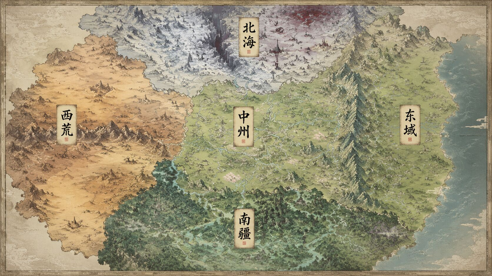
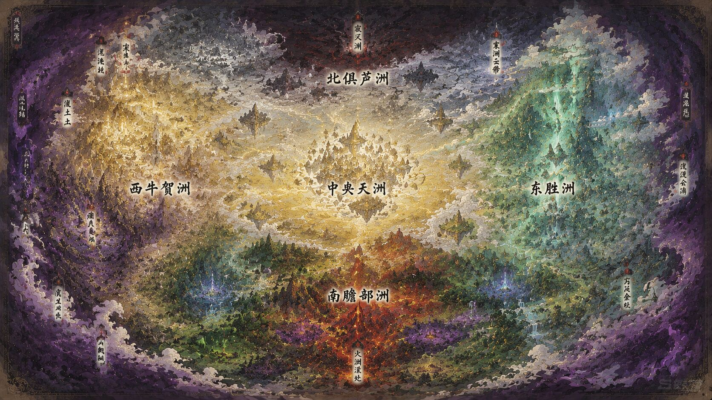
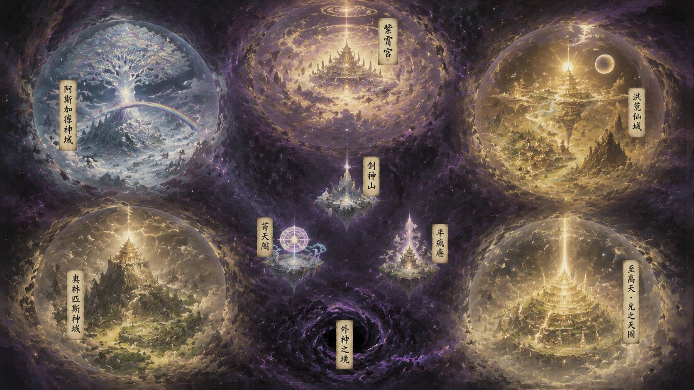

三界修真
三界总纲
凡有仙途，仙有神道。
凡界在下，草木有情、蜉蝣有梦；灵石为币，御剑为途。修士九境之上，若能渡过五色神雷，方可破碎虚空，飞升仙界。
仙界在中，天道有缺、道果易逸；洪荒残岛周期漂现，机缘与劫数并生。修至仙帝，需以自身道果补天——万古无人可成。
神界在上，秩序薄如气泡；紫霄宫居中，四方神系分据。众神庄严华美，暗处道音杂异——从仙帝证道而来的新神，是这个循环里唯一的变数。
你要从哪一界的哪一处，落笔写你的第一行？
凡凡界九境
- 凡人寿元 60-80 年尚未觉醒灵根或未入宗门者，即天地凡俗。凡界九成九为凡人。百人中未必出一个有灵根者。
- 炼气期寿元 100 年1-13层，引气入体入门，无天劫。九成修士终生卡此境寿尽而亡，能突破至筑基者已是万里挑一。
- 筑基期寿元 200 年可御器低速飞行，无天劫。七成筑基修士熬不过 200 年寿元瓶颈，服筑基丹方能稳固道基。
- 金丹期寿元 500 年御剑飞行日行数千里，金丹品质决定成长上限，突破渡 3 道紫雷。金丹分下/中/上/极品/完美（金丹九转）五档。凡俗眼中已是千里挑一的大人物。
- 元婴期寿元 1000 年凭空飞行日行万里，凝聚元神可神识探查与攻击，突破渡 6 道紫金雷。凡俗难见，是各大宗门中层核心战力。
- 化神期寿元 2000 年掌握短距离瞬移，神识覆盖大幅扩张，可远程隔空杀敌，突破渡 9 道金雷。宗门长老级坐镇一方。
- 炼虚期寿元 5000 年掌握空间挪移之术，可短距扭曲空间遁走，突破渡 18 道金红雷。宗门太上级人物。
- 合体期寿元 8000 年可跨域虚空穿梭，一日可走万里之遥，突破渡 36 道血红雷。顶级宗门宗主级镇宗战力。
- 大乘期寿元 1 万年可徒手撕裂空间，一念可镇一域，突破渡 54 道黑红雷。凡界顶点战力，全界屈指可数。
- 渡劫期寿元 2 万年飞升前最终筹备阶段，渡 81 道五色神雷，成功则飞升仙界直入人仙初期。凡界最强，与天道近。
金丹五档
- 下品金丹：终生难破元婴
- 中品金丹：最高可至元婴初期
- 上品金丹：有望元婴圆满
- 极品金丹：可冲击化神及以上
- 完美金丹（金丹九转）：万中无一，丹身附道纹，理论上可冲击渡劫飞升
灵根品质决定金丹品质上限，废灵根最高仅能凝结中品，天灵根方可冲击完美金丹。
渡劫失败惩罚
- 小败：跌回突破前境界，温养道基百年方可再冲
- 大败：境界跌落一阶，永久道伤，终生突破概率减半
- 惨败：肉身元神俱被雷劫湮灭，魂飞魄散
凡界物价参考
- 1 下品灵石 ≈ 1 两金 ≈ 平民三口宽裕活 1 年
- 低阶疗伤丹 10 下品 · 普通铁剑法器 50 下品
- 筑基丹 100 中品（约 1 万下品，平民十辈子赚不到）
- 顶级宗门练气弟子月例仅 3 下品，上品灵石低阶修士终生难见
仙仙界九境
- 人仙寿元 10 万年凡躯蜕为仙躯，滴血可重生；瞬息破碎虚空跨越万里，一念引仙力覆山填海。飞升者初始境界，仙界底层战力。
- 地仙寿元 20 万年仙力裹挟法则丝缕，术法自带天地加持；可开辟洞府级专属仙域。宗门骨干、小势力核心战力。
- 天仙寿元 50 万年凝练完整法则碎片，仙域成型可攻可守；神识覆盖一洲之地，可自主跨洲挪移。宗门中层主力、一方战将。
- 真仙寿元 100 万年执掌 1-3 条完整低阶法则，仙域扩至十万里，可演化一方小天地。宗门长老、一城之主，仙界中坚战力。
- 玄仙寿元 200 万年融合多法则衍生高阶法则，道基孕育道种；仙域可扭曲空间，困杀同阶如探囊取物。宗门太上、一洲镇守，仙界高层战力。
- 金仙寿元 500 万年法则凝为道果，紫府开辟本源小世界雏形，可占据私人浮岛；斩善尸断尘念，道心无漏。宗门宗主、神国主神，一方霸主。
- 仙君寿元 1000 万年执掌一方法则权柄，仙域内可修改局部天地规则；本源小世界衍生完整山川地貌；斩恶尸消嗔念，权柄不偏。万仙盟核心成员，仙界顶层战力。
- 仙王寿元 5000 万年法则升华为大道，言出法随，一念定生死；本源小世界演化完整生态与天道；斩自我尸破我执。仙界现存顶点，万古难出，多沉睡避世。
- 仙帝寿元理论无限融大道本源，与天道合一，可开天辟地重定世界规则。仅存于上古传说，为终局证道目标，万古无人可常规修成。
凡→仙 飞升衔接
渡劫成功直入人仙初期。凡界金丹品质决定仙基上限，完美金丹飞升者道基自带道纹。凡界功法法宝需重炼适配仙力，威力上限仅抵天仙级。
核心背景 · 天道残缺
仙界是上古洪荒破碎后由残存天道碎片与圣人道果拼凑而成的半完整世界。境界越高，道果逸散越快，卡瓶颈越久。
坐忘堕化：道果逸散终局。从遗忘凡尘、淡漠七情始，最终沦为只知掠夺仙元的堕仙。
洪荒残岛
洪荒碎块随混沌潮汐周期性飘入仙界。顶级残岛以蓬莱、瀛洲、方丈三仙山为尊。伴生洪荒煞气，加速道果逸散。
神神界位格
- 神仆 / 侍者真源神以本源创造，无独立自我，为神之意志延伸。神附其上时，一个目光可压碎新神道果。神在则在，神陨则散。
- 大罗金仙新神 / 伪圣仙界仙帝飞升幸存者，百不存一。在仙界是与天道合一的传说，在神界是神仆都不拿正眼看的蝼蚁。能在混沌中切割小世界自保、一念生灭仙界级世界；但在圣人面前抬头资格都无。有力量无本源，不在剧本中，为最大变数。
- 混元金仙准圣 / 从神 / 天使长各神系普通神祗。一念造灭一方大世界，可开神国、创生命、改因果、溯过去未来；但在圣人面前依旧是蝼蚁。
- 混元大罗金仙圣人 / 主神 / 炽天使各神系核心。一念生灭世界，言出法随——我说即法则。可独立开辟神系疆域、穿梭时间线、重定地水火风、创造完整轮回。圣人之下皆蝼蚁不是比喻，是事实——一个眼神可让混元金仙道果崩碎。
- 合道境天道 / 神王 / 天主鸿钧、宙斯、上帝、奥丁。一眼生灭三千世界，一个念头让无数宇宙生灭。不需要言、不需要看，存在即法则，意志即天道运行，因果自他们而出。他们不是"最强的神"——他们就是神系本身。
- 大道境盘古唯一。不是合道，是道本身。呼吸即宇宙生灭，心跳即时间长河。当年以一斧从混沌中开天辟地、撑开秩序气泡，力竭身陨——唯一能正面对抗外神、从混沌中劈出秩序的存在。
- 外神位格体系外混沌意志，秩序反面。不可名状、不可正面击杀——"战斗"概念对其不适用，其"在"本身即溶解秩序、扭曲权能。阿撒托斯为混沌核心，盲目痴梦时混沌有界，若苏醒则秩序瓦解。新神为唯一不被混沌预写之变数。
核心铁律
- 真名法则：真源神真名即本源核心。新神无真名，故不受真名诅咒。
- 外神侵蚀：外神侵蚀权能概念本身。认知即诅咒。
- 伪装法则：新神必须饮尽神浆、笑对诡异。谁先露恐惧就被"请下去休息"。
- 时间线重启：合道境保留记忆，其下全忘。新神、外神、盘古尸身不受影响。
新神三途
被收为从神（失自由）、逃入边境三小国、或被"净化"（抹杀）。无真神主动救新神。
三小国：剑神山、苟天阁、半疯庵。
三界共通铁律
一 · 本源统一
天地灵气为一切超凡力量之根基，分金木水火土五行本源，演化风雷冰光暗等衍生属性。三界灵气浓度层级不同，但五行本源逻辑完全统一。
二 · 资质铁则
灵根（凡）/ 仙根（仙）/ 神根（神）为吸纳灵气核心资质。纯度：天级 > 真级 > 伪级 > 废级。
三 · 晋升铁则
凡界金丹、仙界金仙、神界神君及以上突破，均需渡对应劫罚。强行拔升必留本源隐患。
四 · 阶位压制
大阶位之间存在天然灵气压制。质变大阶鸿沟无法以数量、技巧、外物弥补。
五 · 流派兼容
正统可兼修辅助，但主辅阶位差距不得超过两大阶。邪道与正统强行兼修必导致灵气冲突。
六 · 阵营底线
对抗上古邪魔、外魔入侵、外神污染等存亡大事上保有统一底线。通魔助纣者全界共诛。
🌿 凡界 · 五域山河

☁️ 仙界 · 四洲天穹

✨ 神界 · 秩序气泡

🎭 角色创建
说明
凡/仙/神三界任选起点，各字段联动。境界、灵根、势力选项会根据出身界自动切换。灵根可多选。
基础信息
出身与位置
境界与资质
身份与势力
关系羁绊
背景与开局
🎲 命途 · 造化
抽取规则
- 命途 8 选 3：奇遇 / 体质 / 身世 / 因果 混抽，按稀有度出
- 功法 5 选 2：修炼路数，稀有度决定规格
- 法宝 5 选 2：随身宝物，稀有度决定规格
- 命途稀有度会加权后续抽卡——抽到神话命途，后面开出神话功法/法宝的概率显著提升
- 三个抽取互相独立，可以只抽一部分
🃏 命途抽取
命运的纸牌正在洗牌
抽 8 选 3
已选：0/3
📖 功法抽取
古卷正在自行翻页
抽 5 选 2
已选：0/2
⚔️ 法宝抽取
宝匣正在无风自开
抽 5 选 2
已选：0/2
说明
抽卡结果之外，可手动补充自定义功法、自定义天赋与准备栏（丹药、令牌、随身物…）。点击 + 添加 新增条目，右上角 × 删除。所有条目会写入最终档案。